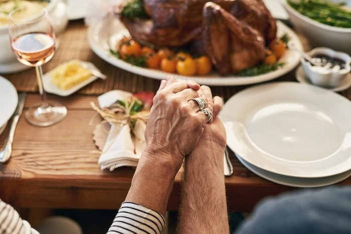

How Not to Disappoint Your Parents This Thanksgiving
Daniel Fox Picture this, it is Thanksgiving Day, and you invited your parents over and offered to cook to give back for all those years you always took the last slice of pumpkin pie. I mean, no one touched it for a whole five minutes so it was fair game, right? Anyway, you insisted that you could get everything set up and have the food ready to serve the day of. That is your first mistake. If you wait to do everything at the last minute your turkey will be done well past your parent’s arrival time, and you will be met with exasperated sighs and despondent smiles. Try to start setting up at least a day before, it will help you relax, and let you worry about more important issues, like how are your parents going to judge your one-room apartment, which you spend double the median cost of rent in your area. You can not forget the pumpkin pie. It lies at the center of all Thanksgiving dinners and without it, Thanksgiving will be joyless and without reason, but make sure you have enough for everybody, or it might be your snotty nephew taking the last piece of pie, instead of you.
| Date | Milestone | Severity |
|---|---|---|
| 2001 | You were born, a very big disappointment to your parents | Gigantic |
| 2002 | The first words you said, was ironically enough, "I am a disappointment" | Honestly, just pretty sad |